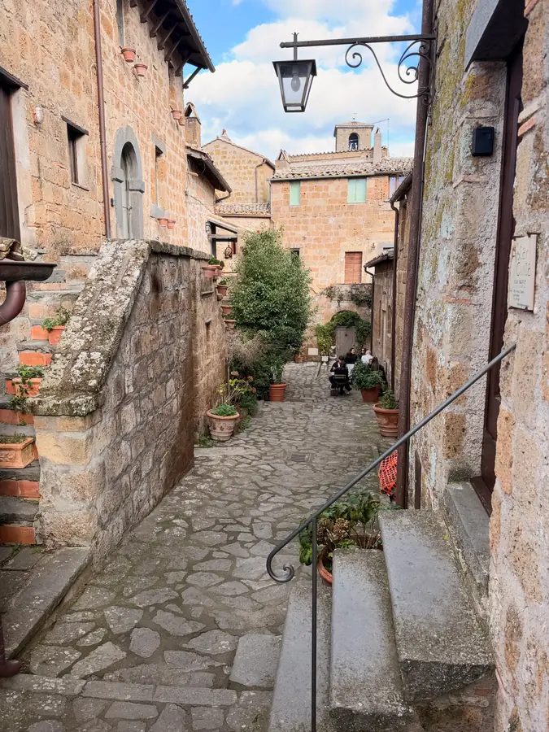
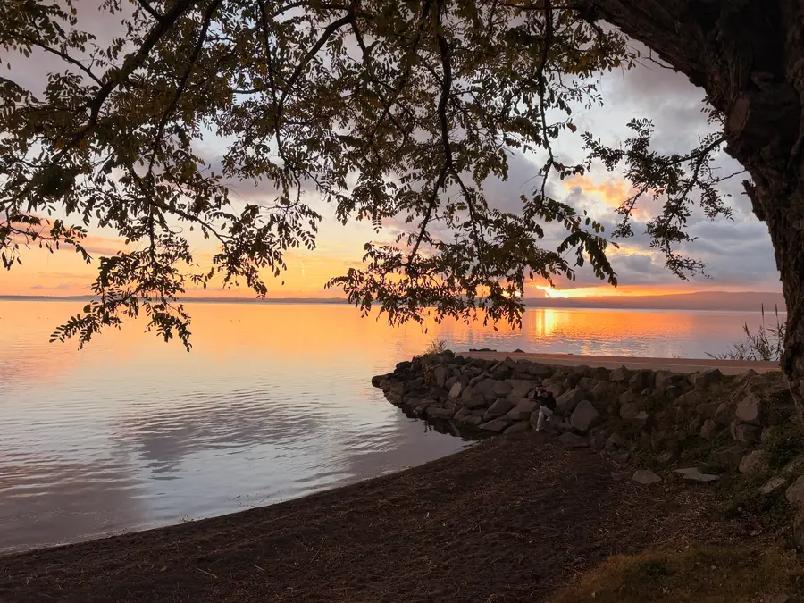
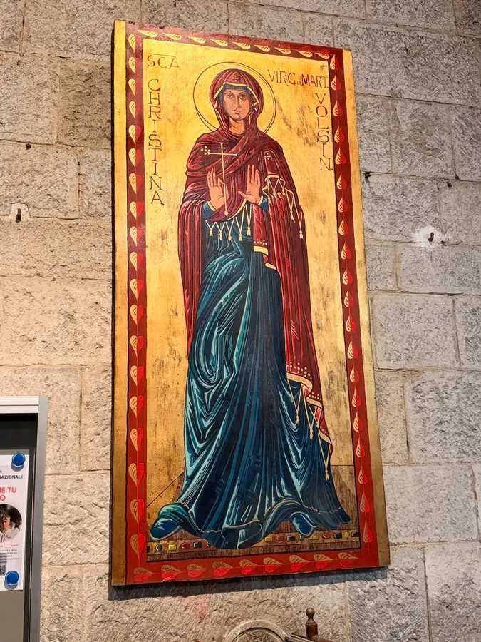

Sunday, the eleventh day of the trip. The morning began not with the road but with a decision. We didn't go to the Val d'Orcia. We're so happy near Orvieto that we're staying two more nights — we arranged it directly with the hostess, without any websites. And then three nights in Etruscan land, near Tarquinia and Viterbo: tombs, thermal baths, and about an hour from there to the airport. That's what our “one base” looks like. There are already two bases, true, but we don't have to drive far — and that's the main thing.

Then — to church. We were at Mass in Porano, a small town near Orvieto. The service isn't ours, the language isn't ours, but Sunday is Sunday. In the church there's a fourteenth-century fresco. That is, people have been praying beneath it for over six hundred years. Generations come and go, and it hangs there.

Next, Civita di Bagnoregio, “the dying town.” It stands on a lonely tuff rock, and only a long footbridge leads to it. There is no other road. Year after year the rains wash away the clay under the rock, the edges crumble, and the town gradually goes away with it. It was founded by the Etruscans, and St Bonaventure came from Bagnoregio. Only a handful of permanent residents remain there now, but there are tourists aplenty. We, as you can see, also made our contribution.

We had lunch right there, and the lunch was local: stracotto d'asino. Put simply, stewed donkey. The donkeys in Civita, by the way, once turned the millstones of the olive press. They worked for people all their lives. Such is the gratitude.

After lunch — Bolsena, a little town on the shore of a large lake. The lake, by the way, isn't an ordinary one: it's the largest volcanic lake in Europe, an almost round bowl in place of collapsed volcanoes. And in the town is the Basilica of St Christina. We venerate her too, the Great Martyr Christina. According to tradition, she was from here, from Bolsena: a very young girl, the daughter of a pagan ruler, she suffered for Christ back in the third century. To meet your own saint in a foreign country is like meeting an old acquaintance.



And in 1263, here, in this church, something happened that later changed the calendar of the whole Western Church. A priest who was traveling from Prague to Rome and doubted the Sacrament — whether Christ Himself is truly present in the bread and wine — was celebrating Mass and saw blood on the Holy Gifts. The blood seeped onto the linen cloth, the corporal. The cloth was taken to Orvieto, to the pope, and a year later Pope Urban IV established the feast of Corpus Christi. The texts for it, according to tradition, were written by Thomas Aquinas, who was also living in Orvieto at the time. And it was for the sake of this cloth that the cathedral in Orvieto was later built. But that's a story for the coming days.


Here's how I think about it. Everyone has doubts, including the one who stands at the altar. And the Lord answered this doubt not with an argument and not with a book, but in such a way that the answer is still kept in a silver reliquary. The doubting priest, strangely enough, turned out to be a very necessary person in this story.


You can listen to the stories about Orvieto and about Civita and Bolsena below. We're staying near Orvieto for two more nights.
Tomorrow morning, horses.